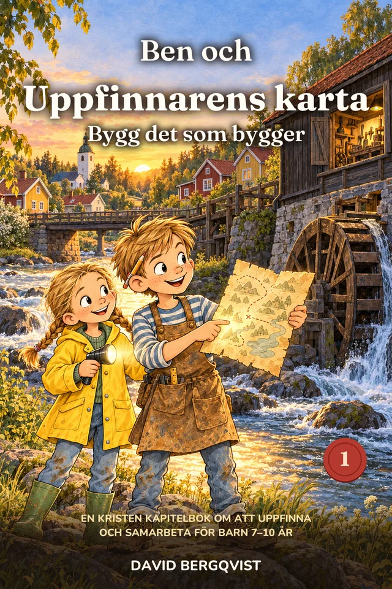

Gammelfarfars gamla kvarn ska rivas. En gulnad karta, fem ledtrådar och en pojke som lär sig att det man bygger för andra lever kvar när man själv är borta.

Ben Ek, 10 år, bygger saker av allt han hittar. Hans gammelfarfar Edvin var traktens uppfinnare och hade sin verkstad i den gamla kvarnen vid älven. Nu vill kommunen riva kvarnen efter midsommar och göra om den till en parkeringsplats, om ingen kan visa att den behövs.
Då hittar Ben Edvins karta: ett gulnat blad med kvarnen i mitten och fem små teckningar runt om. Varje teckning leder till något Edvin byggde som fortfarande används, och till en mening inristad i trä eller metall. Allt börjar när Signe, 82 år, inte kan öppna en burk själv, och Ben lägger två timmar på att göra en enda burköppnare.
Ben kan göra en burköppnare i taget. Det är bra arbete, men det kommer aldrig att räcka.
När han lär sig varför saker går sönder och bygger en mall går samma jobb på tio minuter i stället för två timmar.
Ben slutar göra allt själv och lär klasskompisarna att bygga. Det han sår fortsätter växa utan honom.
18 sidor att skriva ut för barn 6 till 10 år, så att samtalet kan börja vid köksbordet redan den här veckan.
Barn 7 till 10 år, särskilt barn som älskar att bygga, skruva isär saker och uppfinna. Den fungerar också som högläsning för hela familjen.
Under 2027, efter de första Penny-böckerna. Anmäl dig till gratispaketet, så berättar vi samma dag som den kommer.
Ja. Tron finns i Edvins anteckningsbok, i Ellas kvällsböner och i kyrkan, som är en av platserna på kartan. Berättelsen predikar aldrig.
Ja. Paketet är gjort för barn 6 till 10 år, med pyssel, en labyrint och samtalskort om arbete, att ge och att spara.